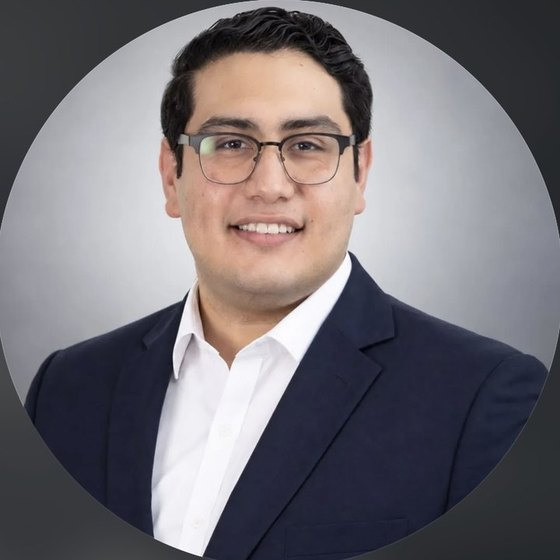

Tos crónica
Tos que no se quita: búsqueda de la causa con estudios dirigidos.
Neumólogo en Monterrey · Certificado por el Consejo Nacional de Neumología
Diagnóstico y tratamiento de enfermedades del pulmón, la pleura, el tórax y el mediastino, con atención cercana para ti y tu familia.
Especialista en pulmones · Padecimientos
Consulta con exploración física completa, revisión de tus estudios previos y un plan de tratamiento a tu medida.
Tos que no se quita: búsqueda de la causa con estudios dirigidos.
Control de crisis, técnica de inhaladores y seguimiento con espirometría.
Manejo a largo plazo, oxígeno cuando se requiere y apoyo para dejar de fumar.
Ronquido, pausas al respirar y cansancio durante el día.
Enfermedad intersticial: diagnóstico temprano y seguimiento de la función pulmonar.
Infecciones respiratorias, secuelas y vigilancia del tratamiento.
Líquido entre el pulmón y la pared del tórax: diagnóstico y drenaje.
Evaluación de nódulos y masas en coordinación con otras especialidades.
Trayectoria

Atención médica especializada en enfermedades respiratorias, con un enfoque humano, ético y basado en la evidencia científica.
Neumólogo formado en Monterrey, con práctica en el Hospital Universitario “Dr. José Eleuterio González” y en hospitales del IMSS. Hoy atiende en ION Hospital Médica Noreste, OCA Medical Center y Christus Muguerza San Nicolás.
Opiniones verificadas · Doctoralia
Lo más mencionado
“Trato excelente, muy profesional y con conocimiento de su especialidad.”
J. L. R. Z. Cita verificada · ION Hospital Médica Noreste · sep 2026“Excelente atención, puntualidad y explicación en las preguntas.”
Sonia M. Cita verificada · Christus Muguerza San Nicolás · oct 2026“Excelente trato. Muy profesional, muy completo.”
Ernesto A. Cita verificada · Christus Muguerza San Nicolás · oct 2026Fragmentos de opiniones publicadas en Doctoralia.com.mx.
Estudios y procedimientos
Pruebas en consultorio para confirmar el diagnóstico el mismo día y ajustar tu tratamiento en cada visita.
Mide cuánto aire sale de tus pulmones y qué tan rápido. Es el estudio base para diagnosticar asma y EPOC.
Saturación de oxígeno en reposo y con esfuerzo, sin agujas y en minutos.
Retiro del líquido acumulado alrededor del pulmón, para estudiarlo y para aliviar la falta de aire.
Medicamento inhalado para crisis o como parte del tratamiento indicado.
Precios de referencia para pacientes sin aseguradora. Pueden variar según el caso.
Neumólogo en Monterrey y San Nicolás
Elige la más cercana. Todas aceptan efectivo, tarjeta, transferencia y aseguradoras.
José Ángel Conchello 2880, Col. Victoria, Monterrey, N.L., C.P. 64520
Adultos y niños desde 10 años
Consultorio 413 · Av. Pino Suárez 640, Centro, Monterrey, N.L., C.P. 64000
Adultos
Av. Rómulo Garza 1100, San Nicolás de los Garza, N.L., C.P. 66495
Adultos
Agenda tu cita
Escríbenos por WhatsApp o llámanos para elegir sede, día y hora. También puedes agendar en línea en Doctoralia.
Preguntas frecuentes
JP Neumo atiende en Monterrey en ION Hospital Médica Noreste (Col. Victoria) y OCA Medical Center (Centro), y en San Nicolás de los Garza en Christus Muguerza San Nicolás. Recibe pacientes de todo el área metropolitana: San Pedro, Guadalupe, Apodaca, Escobedo y Santa Catarina.
Si tienes tos por más de 3 semanas, falta de aire, silbido en el pecho, ronquido con pausas al dormir o dolor al respirar. También si ya tienes asma o EPOC y tus síntomas no están controlados.
En el consultorio del doctor. También realiza pulsioximetría y, cuando se requiere, toracocentesis o drenaje pleural. Si necesitas otros estudios, el doctor te indica dónde y cómo realizarlos.
Usa ropa cómoda, evita comidas abundantes y fumar antes del estudio, y lleva tus inhaladores. Si usas broncodilatadores, pregunta al agendar si debes suspenderlos.
Tus estudios previos (radiografías, tomografías, laboratorios), la lista de medicamentos que tomas y, si aplica, los datos de tu aseguradora.
Próxima etapa
Acceso privado para cada paciente, con sus estudios y la interpretación del doctor. Con resguardo de datos personales sensibles y aviso de privacidad conforme a la ley.
PRÓXIMAMENTE| Parámetro | Valor | % pred. | |
|---|---|---|---|
| FEV1 | 2.10 L | 68% | |
| FVC | 3.40 L | 89% | |
| FEV1/FVC | 0.62 | — |